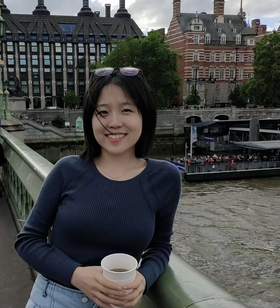

Jian Cui
PhD student, Harvard Linguistics
Email: jiancui@fas.harvard.edu
CV: here

Research interests:
- Theoretical phonology
- First language acquisition
- Tonology
- Morphology
Academic history
- (2022-now) Ph.D. in Linguistics, Harvard University
- (2020-2022) MPhil. in Linguistics, Philology and Phonetics, University of Oxford
- (2015-2019) B.A., Southwest University (Major in English)
Affliations:
Talks and posters:
- (2023) Front-back Asymmetry in Bantu Vowel Harmony: Representations and Constraints.
The 30th Manchester Phonology Meeting. Talk
- (2023) Indices in the Voice Domain: A Unified Analysis of Javanese Passives.
30th Meeting of the Austronesian Formal Linguistics Association (AFLA). Talk. With Jack Rabinovitch
- (2023) Front-back Asymmetry in Bantu Vowel Harmony: An Instance of Coronal Asymmetry.
MorrisHalle@100. Massachusetts Institute of Technology. Poster
Latest update: July 2023